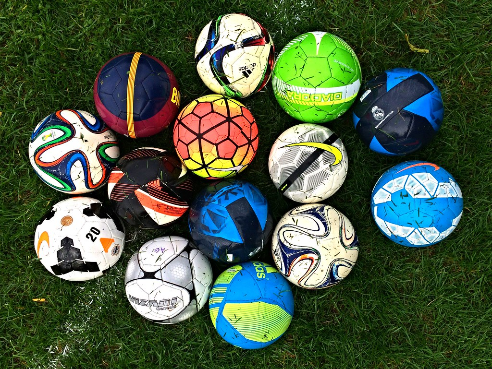

SOCCER BALLS

SOCCER BALLS INFORMATION
Soccer balls are typically made from either leather or synthetic materials.
Leather balls are more durable and provide better touch and feel, but they are also more expensive.
Synthetic balls, on the other hand, are less expensive and more water-resistant, making them a good choice for outdoor play.
Top Soccer balls brands
- Adidas MLS Training Soccer Ball 2024
- Brine – Phantom X Soccer Ball
- Nike – Academy Elite Soccer Ball
- Wilson – NCAA Vivido Replica Ball
RECOMMENDATION BEFORE BUY SOCCER BALL
- Size : Soccer balls come in sizes 1–5, with size 5 being the largest and used by professionals. Size 4 is for ages 8–12, size 3 is for ages 5–8, and sizes 1 and 2 are for ball skills training.
- Material : Soccer balls are usually made from leather or synthetic materials like polyurethane (PU) or polyvinyl chloride (PVC). PU is considered the best material for high-quality balls
- Cover construction : The number of panels and whether they are hand-stitched are important factors. Traditional soccer balls have 32 panels.
- Durability : A more expensive ball may be easier to handle, keep in shape, and not absorb as much water